Analizamos
Entendemos el problema y lo que necesitas lograr.
Soluciones a medida
Diseño y construyo herramientas que ahorran tiempo. Primero evaluamos tu caso, después construimos.
Entendemos el problema y lo que necesitas lograr.
Construimos la herramienta adecuada para tu necesidad.
Una solución funcional, validada y lista para utilizar.
Podemos comenzar con una herramienta sencilla, diseñada para lo que realmente necesitas.
Hablemos de tu negocioOrganicemos tu catálogo y las solicitudes.
Hagamos más sencillo el control financiero.
Exploremos qué procesos podemos automatizar.
Productos y soluciones
Explora aplicaciones, catálogos digitales y proyectos tecnológicos desarrollados para resolver necesidades concretas.
Catálogos para negocios
Catálogos digitales que permiten mostrar productos y recibir solicitudes mediante WhatsApp, sin necesitar una tienda online compleja.
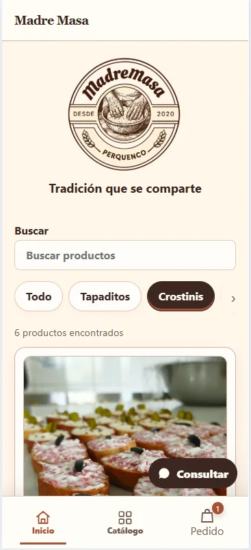
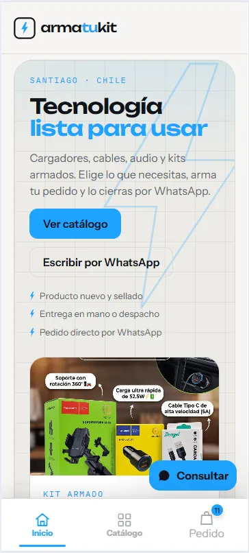
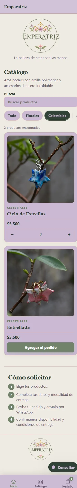
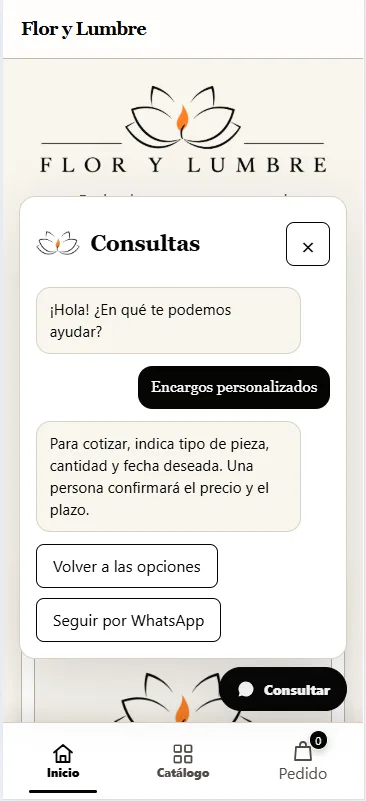
Aplicaciones disponibles
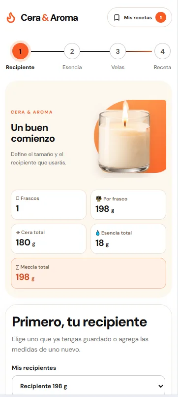
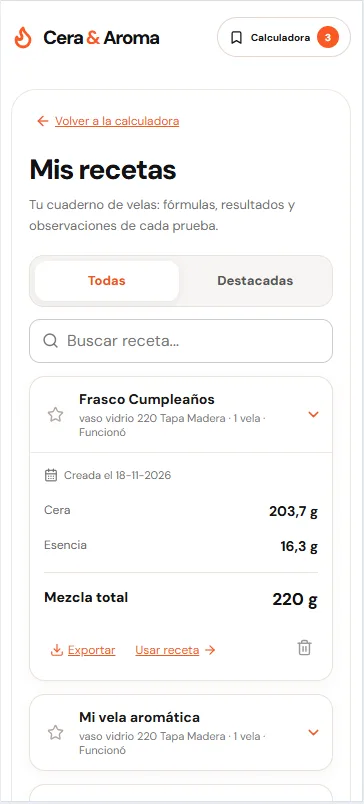
Aplicación disponible
Calculadora para elaborar velas, registrar recetas y trabajar cantidades con mayor orden.
Probar aplicación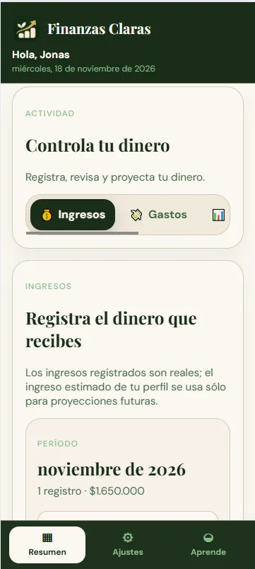
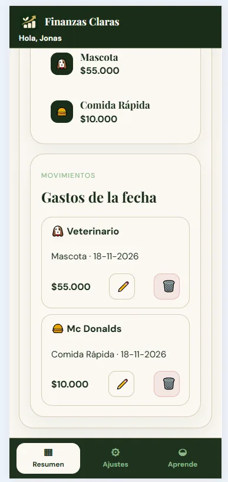
Aplicación disponible
Una aplicación para registrar ingresos, gastos y presupuestos personales con una lectura simple.
Probar aplicación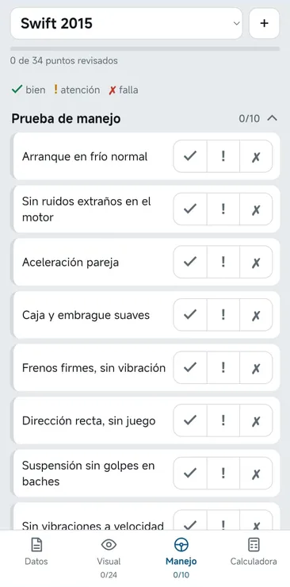
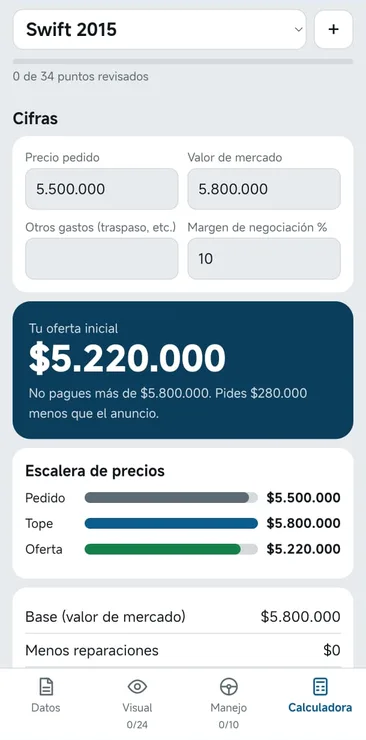
Aplicación disponible
Checklist de inspección para comprar un auto usado: revisión visual, prueba de manejo y calculadora de oferta.
Probar aplicación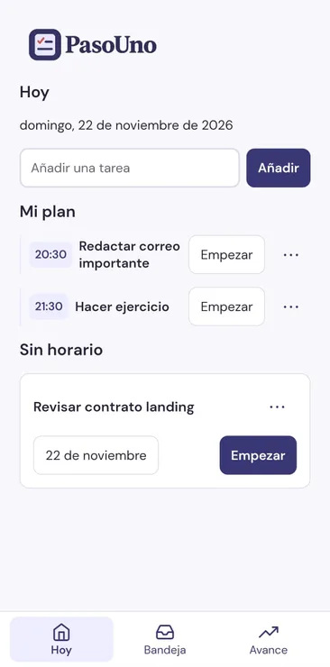
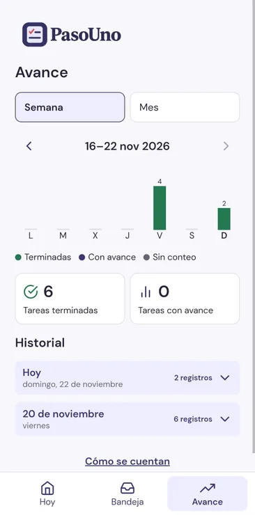
Aplicación disponible
Organiza tus pendientes y avanza con una tarea a la vez.
Probar aplicaciónProyecto destacado
Plataforma para gestionar información ambiental y de sostenibilidad: control de usuarios, control de datos y seguimiento de indicadores.
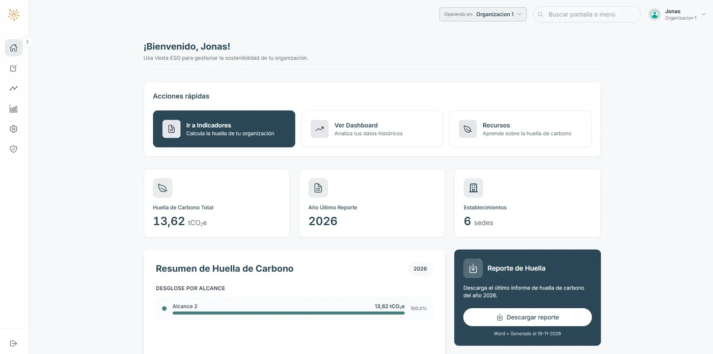
Orientación inicial
Elige la opción que más se parece a tu situación. No necesitas tener definida la solución técnica.
Servicios
Combinamos las capacidades necesarias para resolver un problema concreto. No necesitas llegar con la tecnología definida: primero entendemos lo que ocurre y luego proponemos un camino proporcional.
Aplicaciones, sistemas internos, APIs y MVP para convertir una necesidad concreta en una herramienta útil para tu equipo o clientes.
Proceso
Un proceso claro para entender el problema, validar una solución y construir solo lo que realmente tiene sentido.
01
Cuéntanos qué ocurre hoy, cuál es el problema y qué resultado necesitas.
Recibes Un problema y un objetivo definidos.
02
Revisamos procesos, sistemas existentes, restricciones y posibles alternativas.
Recibes Un diagnóstico con las alternativas posibles.
03
Definimos una solución proporcional al problema.
Recibes Una propuesta proporcional a tu caso.
04
Cuando tiene sentido, construimos una pequeña PoC para validar la idea antes de desarrollar el proyecto completo.
Recibes Una prueba acotada antes de invertir más.
05
Si decidimos avanzar, acordamos alcance, entregables, plazos y costos.
Recibes Alcance, plazos y costos acordados.
06
Implementamos de forma incremental y con objetivos claros.
Recibes Avances que puedes revisar en cada iteración.
07
Cuando corresponde, agregamos soporte, monitoreo o nuevas etapas.
Recibes Soporte y próximas etapas, si corresponde.
Trabajo directo
Soy Jonathan Valdés, Ingeniero en Informática con experiencia en desarrollo, cloud, QA, datos, automatización y observabilidad.
Trabajas directamente conmigo durante el proceso y, cuando el proyecto lo requiere, podemos incorporar las capacidades necesarias para resolverlo correctamente.
Desarrollo · Cloud · QA · Data · Automatización · Observabilidad
FAQ
Respuestas breves para aclarar dudas habituales antes de conversar sobre tu proyecto.
Principalmente con empresas pequeñas y medianas que necesitan resolver un problema tecnológico concreto, mejorar un proceso o construir una solución sin ampliar innecesariamente su equipo interno.
No. Lo importante es entender primero qué necesitas resolver. A partir de eso evaluamos las alternativas y proponemos una solución proporcional al problema.
No. Podemos abordar desde una integración o automatización puntual hasta una aplicación, plataforma o etapa mayor de modernización tecnológica.
No necesariamente. Cuando el caso lo permite, podemos validar primero una parte crítica mediante una prueba de concepto acotada antes de avanzar con un desarrollo mayor.
Después de entender el problema definimos alcance, entregables y complejidad. Con esa información podemos estimar costos y acordar una forma de trabajo clara antes de comenzar.
Sí. Trabajas directamente conmigo durante el proceso. Cuando un proyecto requiere capacidades adicionales, podemos incorporarlas de forma explícita según la necesidad.
Solo una explicación simple del problema, proceso o idea que quieres resolver. No necesitas llegar con documentación técnica ni una solución definida.
¿Tienes un problema por resolver?
Cuéntame qué quieres resolver y definimos el siguiente paso.
¿Prefieres correo? contacto@jonathanvaldes.com
Si el envío falla, abrimos WhatsApp con tu mensaje.
Agenda
Reserva una conversación inicial de 30 minutos para revisar el problema, entender contexto y definir un siguiente paso.
Horarios de Santiago, Chile · America/Santiago
Consulta los horarios disponibles para comenzar.